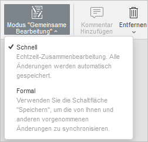
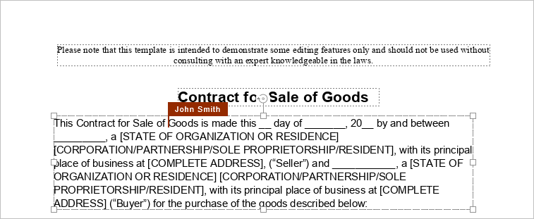
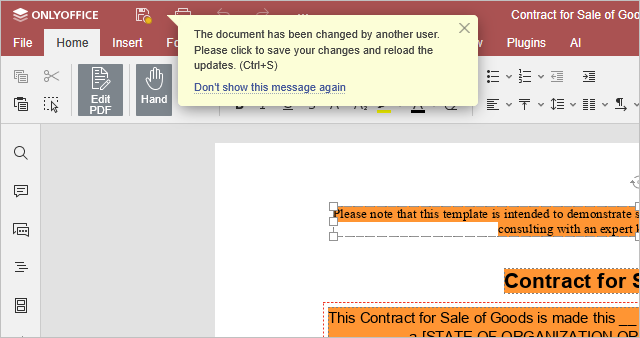
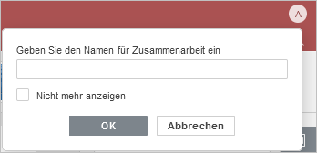

Gemeinsame Bearbeitung von Dokumenten in Echtzeit
Der PDF-Editor ermöglicht es Ihnen, einen einheitlichen teamweiten Ansatz für den Arbeitsablauf beizubehalten: kommunizieren Sie direkt im Editor, kommentieren Sie bestimmte Teile Ihrer Dokumente, die zusätzliche Eingaben von Dritten erfordern, und speichern Sie PDF-Dateiversionen für die spätere Verwendung.
Im PDF-Editor können Sie in Echtzeit in zwei Modi an Dateien zusammenarbeiten: Schnell oder Formal.
Die Modi können in den erweiterten Einstellungen ausgewählt werden. Es ist auch möglich, den gewünschten Modus über das Symbol Modus "Gemeinsame Bearbeitung" auf der Registerkarte Zusammenarbeit der oberen Symbolleiste auszuwählen:

Die Anzahl der Benutzer, die am aktuellen Dokument arbeiten, wird auf der rechten Seite der Editor-Kopfzeile angezeigt – . Wenn Sie sehen möchten, wer genau die Datei gerade bearbeitet, können Sie auf dieses Symbol klicken oder das Chat-Bedienfeld mit der vollständigen Liste der Benutzer öffnen.
Modus "Schnell"
Der Schnell-Modus zeigt die von anderen Benutzern vorgenommenen Änderungen in Echtzeit an. Wenn Sie in diesem Modus gemeinsam an einem PDF arbeiten, ist die Möglichkeit, den letzten rückgängig gemachten Vorgang wiederherzustellen, nicht verfügbar. Dieser Modus zeigt die Aktionen und Namen der Mitbearbeiter an, während sie den Text bearbeiten.
Bewegen Sie den Mauszeiger über eine der bearbeiteten Passagen, um den Namen des Benutzers zu sehen, der sie gerade bearbeitet.

Modus "Formal"
Der Formal-Modus wird standardmäßig verwendet und blendet die von anderen Benutzern vorgenommenen Änderungen aus, bis Sie auf das Symbol Speichern klicken, um Ihre Änderungen zu speichern und die von Mitautoren vorgenommenen Änderungen zu übernehmen. Wenn ein PDF in diesem Modus gleichzeitig von mehreren Benutzern bearbeitet wird, werden die bearbeiteten Textpassagen mit gestrichelten Linien in verschiedenen Farben markiert.

Sobald einer der Benutzer seine Änderungen durch Klicken auf das Symbol speichert, sehen die anderen einen Hinweis in der Statusleiste, der darauf hinweist, dass es Aktualisierungen gibt. Um die von Ihnen vorgenommenen Änderungen zu speichern, damit andere Benutzer sie sehen und die von Ihren Mitbearbeitern gespeicherten Aktualisierungen abrufen können, klicken Sie auf das Symbol in der linken oberen Ecke der oberen Symbolleiste. Die Aktualisierungen werden hervorgehoben, damit Sie sehen können, was genau geändert wurde.
Sie können angeben, welche Änderungen während der gemeinsamen Bearbeitung hervorgehoben werden sollen, indem Sie auf die Registerkarte Datei in der oberen Symbolleiste klicken, die Option Erweiterte Einstellungen auswählen und eine der drei Möglichkeiten auswählen:
- Alle anzeigen: Alle Änderungen, die während der aktuellen Sitzung vorgenommen wurden, werden hervorgehoben.
- Letzte anzeigen: Nur die Änderungen, die seit dem letzten Klicken auf das Symbol vorgenommen wurden, werden hervorgehoben.
- Keine: Änderungen, die während der aktuellen Sitzung vorgenommen wurden, werden nicht hervorgehoben.
Anonym
Portalbenutzer, die nicht registriert sind und kein Profil haben, gelten als anonym, können jedoch weiterhin an Dokumenten zusammenarbeiten. Um ihnen einen Namen zuzuweisen, muss der anonyme Benutzer beim ersten Öffnen des Dokuments einen Namen in das entsprechende Feld in der rechten oberen Ecke des Bildschirms eingeben. Aktivieren Sie das Kontrollkästchen "Nicht mehr anzeigen", um den Namen beizubehalten.
